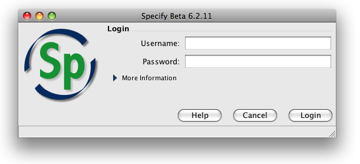
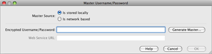
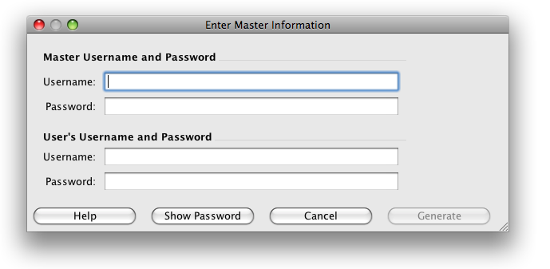
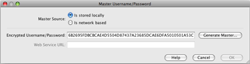
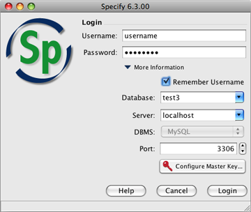

(expand) button.
(expand) button.How to Login |
The security for Specify 6 uses both a Master Username and Password, which accesses the MySQL Database, as well as a User Username and Password, which accesses the Specify application. Specify uses only one Master Username and Password for all users, but encrypts the Master password with the User information, created an encrypted string. This allows the Master information to become unique for each user.
In review, the following information is required to login to Specify the first time.
The login tool remembers the usernames and passwords of the last person to login. It is important to note that the User Username and Password is stored on the users machine. This allows the login tool to automatically fill in the Username, Password and encrypted Master. To login to another machine the user will need their username and password and a valid Encryption Key, just as they did when logging in for the first time.
For more information regarding the Specify 6 security model please refer to Specify Security.
The login process includes dialog windows for entering both types of information.

Users with an existing Username and Password can simpy login using the correct fields.
Users that have not yet set up their login information will need to click the(expand) button.

The Database and Server information is configured when setting up Specify and should be included in the dialog. If the Database and Server information does not appear in the dialog please consult your IT administrator. If more than one Database and Server are available the dialog will list all the choices for both.
Users needing to create their encrypted Master Username and Password should click the Configure Master Key ... button.

The Master Source information refers to the location that the encryption is stored.
At this time Specify does not support obtaining an encryption key from a web service, so choose Encryption key stored in local preferences.
Encrypted Username / Password refers to the string that results when the Master Username and Password are Encrypted (using the User Username and Password). This can be created by the IT administrator when a new user is created in the Specify application, then given to the user, or it can be created by clicking the Generate Master ... button.

Type in the information for both passwords and click the Generate button. The Show Password button can be used to turn off the encryption characters and show the actual textual information.

The encrypted Master Username and Password now appears in the Encrypted box.

The first login dialog is now presented. Click the Login button to complete the process.